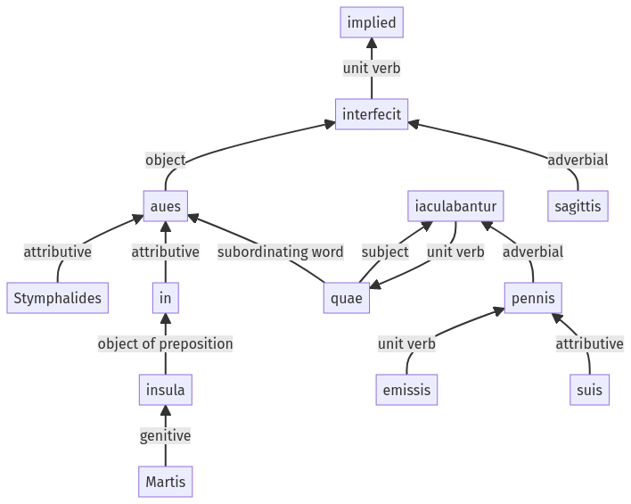

Hyginus, Fabuleer, 30pr.6.1-30pr.6.12a
30pr.5.1-30pr.5.13a | 30pr.7.1-30pr.7.11a
Sentence 421
30pr.6.1-30pr.6.12a
aues Stymphalides in insula Martis, quae emissis pennis suis iaculabantur, sagittis interfecit.
1 aues Stymphalides in insula Martis
2 quae
3 emissis
2 pennis suis iaculabantur
1 sagittis interfecit
aues Stymphalides in insula Martis, quae emissis pennis suis iaculabantur, sagittis interfecit.
Highlighting:
- connecting words
- unit verb
- subject
- object
Color code:
- independent clause (level 1, transitive verb)
- subordinate clause (level 2, transitive verb)
- participle (level 3, transitive verb)
